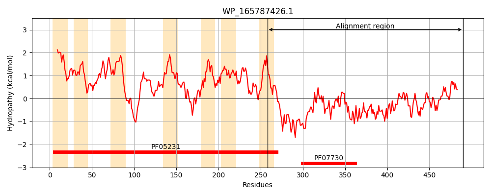
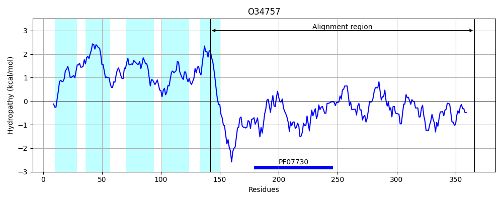
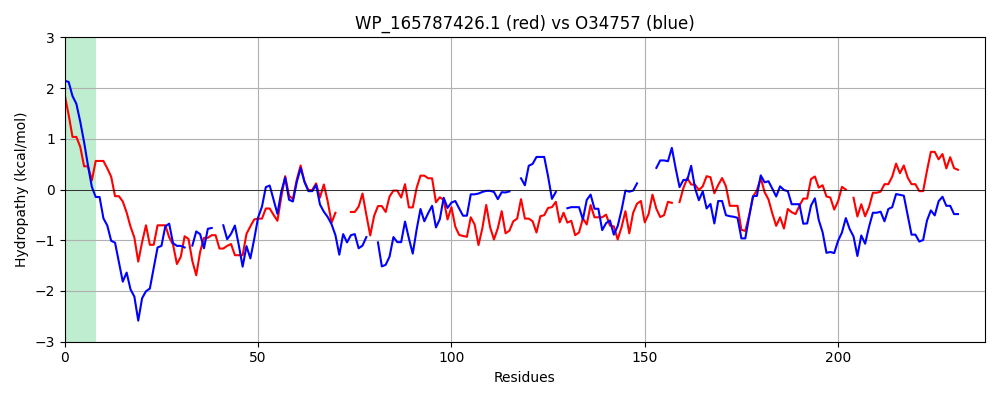

Hit Accession: O34757
Hit TCID: 9.B.238.3.5
Hit Description: gnl|BL_ORD_ID|7150 gnl|TC-DB|O34757|9.B.238.3.5 Sensor histidine kinase DesK OS=Bacillus subtilis (strain 168) OX=224308 GN=desK PE=1 SV=1
Mach Len: 238
e:0.000000
Query TMS Count : 7
Hit TMS Count: 5
TMS-Overlap Score: 2.750000
Predicted Substrates:CHEBI:8526;protein polypeptide chain, CHEBI:2359;ATP
BLAST Alignment:
Score: 166 , Bit scores: 68 bits, E-value: 1.5e-12, Alignment length: 238, Percentage identity: 25
Query: 258 LTGLLLGAGIQRLRELNLSLQNELARNRRLAERLLETEESVRRDVARELHDDIGQTITAIRTQAGIVQRLA---PNNASVRQSGQLIEQLSLGVYDSVRRLLGRLRPRQLDDLPLEQAVRSLMREMELEDRGIVSHLDWRINEAGLSENQRVTLFRVC-QEGLNNIVKHASASAVTLQGWQQDERLMLVLEDDGCGLPPGSNL-QGFGLTGMRERVTALGGTLTISCTHGTRVCVNLP 490
++ +LL I+ +E + N R+AE L++ EE R+ +AR+LHD +GQ ++ I ++ + ++L P A+ + + ++Q + + VR+++ ++ +L D + ++ ++ ++ I W N + L+EN + +C +E + N+VKH+ A + Q + +++ + DDG ++ +G GL GMRER+ G+L I +GT++ + +P
Sbjct: 142 ISAILLPFSIKSRKERERLEEKLEDANERIAE-LVKLEE--RQRIARDLHDTLGQKLSLIGLKSDLARKLIYKDPEQAA--RELKSVQQTARTSLNEVRKIVSSMKGIRLKDELIN--IKQILEAADI--MFIYEEEKWPENISLLNEN----ILSMCLKEAVTNVVKHSQAKTCRVDIQQLWKEVVITVSDDGTFKGEENSFSKGHGLLGMRERLEFANGSLHIDTENGTKLTMAIP 366 | Protein Hydropathy Plots: |
|---|
|  |  |
Pairwise Alignment-Hydropathy Plot:
|
|---|
|  |